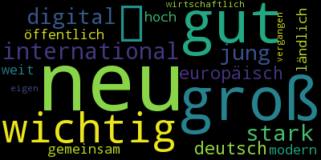
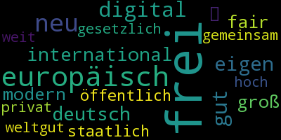
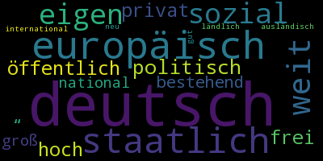

Textanalysen der Wahlprogramme für die Bundestagswahl in den Jahren 1949 - 2017 (data cleaning ongoing - data not final)
Word clouds der wichtigsten
Adjektive
Wähle einen Worttyp aus...
Wähle einen Worttyp aus...
Adjektive
Substantive
Verben
Pronomen

 
CDU
SPD
Grüne
Linke
FDP
AfD
Aktuell ausgewähltes Jahr:
2017
2017
Übersicht bzgl. Sprachniveau der Parteiprogramme
Übersicht bzgl. Menge an genutzten Wörtern